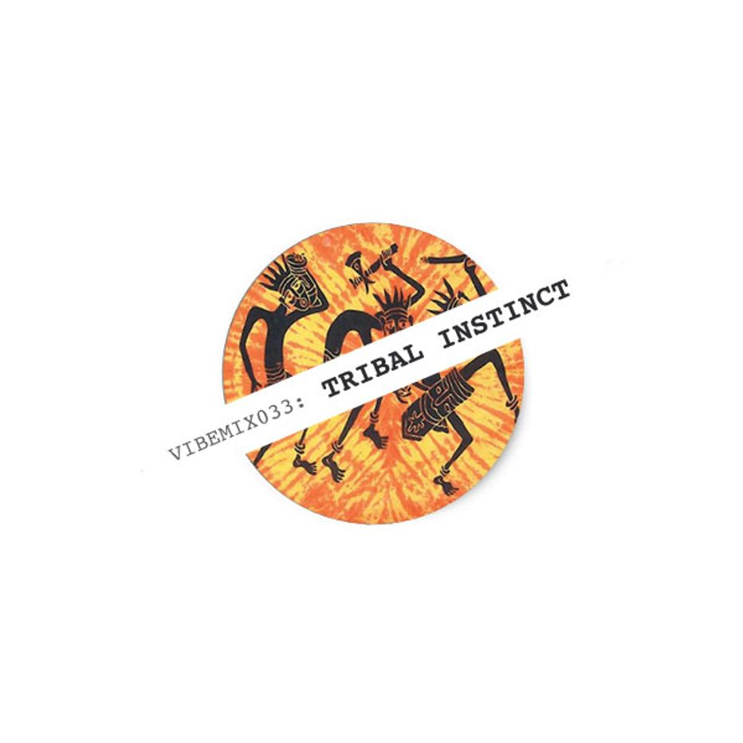

| VIBEMIX033: | TRIBAL INSTINCT | ||
|---|---|---|---|
| 01 | Calyx | Kingdom | 00:00 |
| 02 | Keaton & Hive | The Plague | 07:18 |
| 03 | Source Direct & Instra Mental | The Place | 13:10 |
| 04 | Shy FX | Bambaata | 19:34 |
| 05 | Digital | Daylight Robbery | 23:35 |
| 06 | Kemal | Plan B | 28:40 |
| 07 | Mechanizm | Gate Keeper | 33:32 |
| 08 | Suv & Surge | Snake Charm | 38:35 |
| 09 | Kemal | Glimpse of Truth | 47:21 |
| 10 | Dom & Kemal | Ethnicity | 55:01 |
| ℗ © 2018 | VIBERATIONS REC. |
|
 |
Yet another look into Drum & Bass classics focusing on the tribal sound this time. |